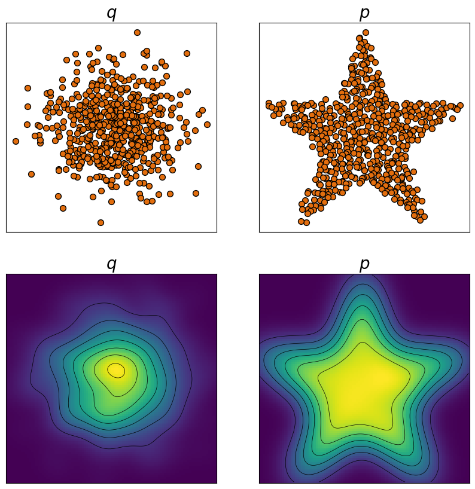
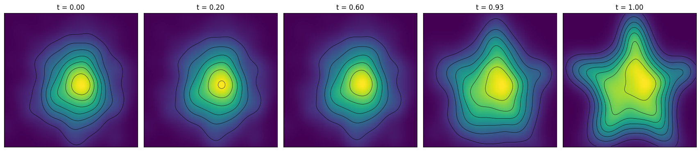

Flow Matching : 101
👋 Introduction
I usually write about my own “projects” or ideas here, but this time I wanted to do something a bit more educational. Lately, I’ve been working on models that incorporate — or entirely rely on — the idea of Flow Matching, and I’ve grown to really enjoy this class of models. So I figured I’d write a short and (hopefully 🤞) approachable overview of how they work.
We’ll keep things simple and structure it as follows:
- Theory
- Implementation
- Example
This isn’t meant to be a comprehensive deep dive — just a compact introduction to the core ideas behind flow matching and how they’re put into practice.
A Brief Bit of Theory
The idea behind flow matching (FM) follows that of most current generative strategies: “We want to sample from distribution $p$, but this is hard, so instead we will sample from distribution $q$ (easy) and transform the output into a sample of $p$.”
In denoising diffusion models, we do this by learning how to remove Gaussian noise one step at a time; in normalizing flows, we use invertible transformations to map samples from a simple base distribution $q$ (e.g. a standard Gaussian) into samples of the complex target distribution $p$, while being able to compute exact likelihoods through the change-of-variables formula.
Flow matching takes this idea further: instead of explicitly parameterizing an invertible map, it defines a continuous flow between $q$ and $p$, and learns a vector field that describes how samples move along this path.
If you’re from an engineering background, you’re probably already familiar with vector fields — if not, imagine leaves drifting in a river 🍃 🌊. Each point in the river has its own current, with a direction and a speed. The vector field is the map of these currents: drop a leaf anywhere, and it tells you where it will move next and how fast. By following these directions over time, you can trace the entire trajectory of the leaf until it hits the bank downstream.
More formally, we write:
$$ \frac{d x_t}{d t} = v_t(x_t), $$where $x_t$ would be the position your leaf at time $t$ and $v_t$ is the vector field describing the current. If you drop a leaf at position $x_0$ and let it flow for $t$ time units, your new position $x_t$ can be calculated by integrating the vector field over time:
$$ x_t = x_0 + \int_0^t v_\tau(x_\tau) \, d\tau. $$Imagine dropping a bunch of leaves upstream and watching them drift along the river. If you knew the exact vector field — the local currents at every point — you could predict (using the above equation) where each leaf would end up. In fact, you can predict the full distribution of leaves downstream.
Now assume you have a specific goal for how the leaves should spread out downstream, and also full control over how you drop them in. In other words, you know the starting distribution of the leaves and the target distribution you want to reach. What you need to find is the river with the right current — the vector field — that carries the leaves from the former to the latter.
This is really the core idea behind flow matching: we learn a vector field that moves samples from the source distribution $q$ toward the target distribution $p$. Once learned, we can draw samples from $q$ and let the vector field $v_t$ carry them along the flow until they match $p$.
This would not work if the river was inhabited by, say, leaf-eating fish, meaning some leaves never reach the riverbank at all. It would also fail if trees hung over the river and occasionally dropped new leaves into the flow. In mathematical terms, these are sinks and sources — parts of the vector field where probability mass disappears or is created.
The total number of leaves must stay the same as they move downstream — they can spread out or cluster together (that’s local compression and expansion), but none can vanish or appear out of thin air. If they did, the final distribution would no longer represent the same total mass — in probability terms, it would stop being a valid, normalized distribution.
This means, that our flow must be mass- or probability preserving. So before we start finding these vector fields, let’s prove that if we find such a vector field we will have a probability preserving transformation (as we step forward in time).
Mission: Show that the transformation induced by $v_t$ is probability preserving.
So where do we start? If you’ve ever taken a chemical engineering class, all this talk about probability distributions or densities over time might make you think of the Transport Equation, which literally tells us how a density changes in a flow over time. Seems like a good place to start, right? This equation reads as:
$$ \frac{\partial p_t(x_t)}{\partial t} = - \nabla_x \cdot (p_t(x_t) v_t(x_t)) $$stating that the change in density at a given location equals the negative divergence of the probability flux $p_t(x)\,v_t(x)$. In other words, $p_t(x)$ decreases when probability is flowing out of an infinitesimal neighborhood around $x$, and increases when probability is flowing in.
The partial derivative only describes the flow for a fixed position ($x_t$); but if we want to understand how the flow changes around a particle as it moves along its trajectory, we must account for the fact that at each time point, it’s being nudged in the direction of the flow. Hence, we need to look at the total derivative:
$$ \frac{d}{d t} p_t(x_t) = \frac{\partial p_t(x_t)}{\partial t} + \nabla_x p_t(x_t)^T \underbrace{\frac{d x_t}{d t}}_{v_t(x_t)} $$where we used the chain rule to get the total derivative. Next we insert the expression from the transport equation and get:
$$ \frac{d}{d t} p_t(x_t) = - \nabla_x \cdot (p_t(x_t) v_t(x_t)) + \nabla_x p_t(x_t)^T v_t(x_t) $$We expand this using the divergence product rule:
$$ \frac{d}{d t} p_t(x_t) = - [p_t(x_t)(\nabla_x \cdot v_t(x_t)) + \nabla_x p_t(x_t)^T v_t(x_t) ] + \nabla_x p_t(x_t)^T v_t(x_t) $$Which gives us (terms cancel out):
$$ \frac{d}{d t} p_t(x_t) = - p_t(x_t)(\nabla_x \cdot v_t(x_t)) $$To see why this is probability preserving we will look at the probability mass in a small volume around the given point $x_t$. This is given by the volume $V_t$ times the density $p_t$, hence the change of mass for any given point can be written as:
$$ \frac{d}{d t} [p_t(x_t)V_t] = \frac{d p_t(x_t)}{d t} V_t + p_t(x_t) \frac{d V_t}{d t}, \qquad \frac{dV_t}{d t} = V_t (\nabla_x \cdot v_t(x_t)) $$We replace this with the expression from above:
$$ \frac{d}{d t} [p_t(x_t)V_t] = [-p_t(x_t)(\nabla_x \cdot v_t)(x_t)]V_t + p_t(x_t)V_t(\nabla_x \cdot v_t(x_t)) = 0 $$Since this has to hold true for any $x_t$, it means that probability mass isn’t created nor destroyed as the samples move; it’s just being redistributed. That is, we’ve shown that it is probability preserving (🎉).
The key insight from all of this is that a well-defined vector field doesn’t just move samples around — it moves distributions in a way that preserves total probability. This means that if we can learn such a vector field, we can continuously transform one distribution into another without losing or creating mass along the way. In other words, flow matching gives us a principled, probability-preserving way to morph $q$ into $p$.
Implementation – Learning the vector field
Knowing that finding such a vector field comes with certain guarantees, we can now focus on learning the optimal vector field directly, rather than optimizing the log-likelihood as in a normalizing flow. To do so, we use a regression-based loss:
$$ L_{\textrm{FM}}(\theta) = \mathbb{E}_{t \sim \mathcal{U}(0,1)} \, \mathbb{E}_{x_t \sim p_t} \left[ \, \| v_{\theta}(t, x_t) - v_t^*(x_t) \|^2 \, \right]. $$At first glance, this seems impossible to compute — we need the true velocity field $v_t^*(x_t)$ to evaluate the loss, but that’s exactly what we’re trying to learn.
However, this isn’t a problem. The loss above is what we want to minimize, but as long as we use an alternative formulation that yields equivalent gradients, we can still train the model correctly.
To achieve this, we follow the idea introduced by Tong et al., 2023, who proposed Conditional Flow Matching (CFM). The key insight in CFM is to work with conditional rather than marginal flows.
Practically, this means we condition each trajectory on a specific data point $x_1 \sim p_1$, and define a deterministic path between a source sample $x_0 \sim p_0$ and its target $x_1$. The simplest choice is a linear interpolation:
$$ x_t \triangleq (1 - t) x_0 + t x_1, \qquad t \in [0,1]. $$In this case we have:
$$ v_t(x_t \mid x_0, x_1) = \frac{d x_t}{d t} = \frac{d}{d t} \big[(1 - t) x_0 + t x_1\big] = x_1 - x_0. $$This conditional velocity is trivial to compute — it’s just a subtraction.
If we use this conditional vector field instead of the marginal one in our loss, and sample the two anchors independently, we obtain:
$$ \mathcal{L}_{\textrm{CFM}}(\theta) = \mathbb{E}_{t \sim \mathcal{U}(0,1),\; (x_0, x_1) \sim p_0, p_1} \left[ \, \| v_{\theta}(t, x_t) - v_t(x_t \mid x_0, x_1) \|^2 \, \right]. $$While beyond the scope of this post, one can show that:
$$ \nabla_\theta \mathcal{L}_{\textrm{CFM}}(\theta) = \nabla_\theta \mathcal{L}_{\textrm{FM}}(\theta). $$Kind of wild, right? 🤯
But also very convenient — this result means we can train using the conditional surrogate loss while still obtaining gradients identical to those of the true (but intractable) flow-matching objective.
Implementation (Example!)
To see what the implementation looks like in practice, let’s walk through a simple example. We’ll try to learn how to sample from a star-shaped distribution by training a model to push samples from a standard normal distribution toward it.
To put things into context, the image below shows (top row) several samples drawn from each of the two distributions, and (bottom row) their corresponding densities. Here, the normal distribution serves as the source/base distribution ($q$), while the star distribution represents the target ($p$).

We’ll use the following neural network (FlowModel) to parameterize the vector
field. The architecture isn’t particularly sensitive to design choices — I use a
SiLU activation to avoid “Dying ReLU”, but
alternatives like ELU or GELU also work well. The step method performs a
single integration step of size $\Delta t$ using a midpoint (2nd-order
Runge–Kutta) solver to approximate the flow.
import torch
from torch import nn
from torch import Tensor
class FlowModel(nn.Module):
def __init__(self, dim: int = 2, h: int = 128):
super().__init__()
self.v_star = nn.Sequential(
nn.Linear(dim + 1, h), nn.SiLU(),
nn.Linear(h, h), nn.SiLU(),
nn.Linear(h, h), nn.SiLU(),
nn.Linear(h, dim))
def forward(self, t: Tensor, x_t: Tensor) -> Tensor:
return self.v_star(torch.cat((t, x_t), -1))
def step(self, x_t: Tensor, t_start: Tensor, t_end: Tensor) -> Tensor:
h = (t_end - t_start).view(1, 1)
t0 = t_start.view(1, 1).expand(x_t.size(0), 1)
t_mid = t0 + 0.5 * h
# Evaluate the vector field at start and midpoint
k1 = self(t=t0, x_t=x_t)
k2 = self(t=t_mid, x_t=x_t + 0.5 * h * k1)
return x_t + h * k2
To train this we do:
import torch
import torch.nn as nn
import tqdm
from generators import StarGenerator # (my own implementation)
# --- Model & training setup -------------------------------------------------
flow = FlowModel()
optimizer = torch.optim.Adam(flow.parameters(), lr=5e-4)
loss_fn = nn.MSELoss()
# --- Training loop ----------------------------------------------------------
num_steps = int(5e4)
for step in tqdm.tqdm(range(num_steps), desc="Training Flow Model"):
# Sample target and initial data
x_target = torch.tensor(StarGenerator.sample())
x_source = torch.randn_like(x_target)
# Sample random interpolation times
t = torch.rand(len(x_target), 1)
# Interpolate between source and target
x_t = (1 - t) * x_source + t * x_target
dx_t = x_target - x_source
# --- Forward & backward passes ------------------------------------------
optimizer.zero_grad()
pred_dx = flow(t=t, x_t=x_t)
loss = loss_fn(pred_dx, dx_t)
loss.backward()
optimizer.step()
We can inspect what it looks like as we try to push our base distribution ($q$) towards the target ones, below are the different densities that we observe as we step forward along the trajectory:

Kind of cool - right?! ⭐ As you can see we go from a normal distribution towards something that’s more and more similar to the star distribution.
Other Resources
Different explanations work well for different people, and I’m by no means claiming this is the most intuitive or best explanations of the ideas behind Flow Matching. This I want to recommend a few other resources that might be helpful for the interested reader: